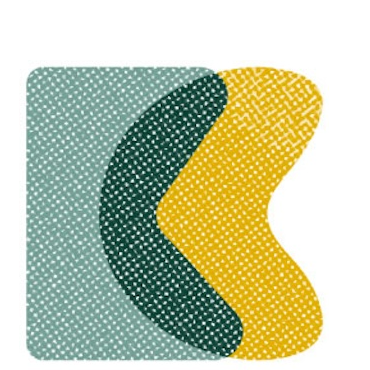

Tim Sherratt

I’m a historian and hacker who researches the possibilities and politics of digital cultural collections. You can follow what I’m up though my news feed or on Mastodon.
Selected publications
- Candela, Gustavo, Sally Chambers, and Tim Sherratt. “An Approach to Assess the Quality of Jupyter Projects Published by GLAM Institutions.” Journal of the Association for Information Science and Technology 74, no. 13 (2023): 1550–64. detailsopen accessSherratt, Tim. “Hacking Heritage: Understanding the Limits of Online Access.” In The Routledge International Handbook of New Digital Practices in Galleries, Libraries, Archives, Museums and Heritage Sites, edited by H Lewi, W Smith, S Cooke, and D vom Lehn, 116–30. London & New York: Routledge, 2020. detailsopen access: author accepted manuscript